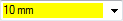

Holes database
Hole data is contained in multiple database files. The hole database files are stored in the C:\Program Files\Siemens\Solid Edge 2023\Preferences\Holes folder. You can change the default location by modifying the File menu→Settings→Options→File Locations→Holes database path.
When defining a hole, you are given a set of hole parameters contained in the hole database. If you manually enter a value not in the hole database, the value fields are displayed with a yellow background.

Each database file is based on a standard.
-
ANSI Inch
-
ANSI Metric
-
DIN Metric
-
GB Metric
-
GOST Metric
-
ISO Metric
-
JIS Metric
-
UNI Metric
The database files are in a Microsoft Excel format. The following Excel formats are supported:
-
.xlsx
-
.xls
-
.xlsm
-
.xlsb
The .xlsx format is supported when Microsoft Excel is not installed. The other formats are supported only if Excel is installed.
Editing the holes database
You can edit a hole database by clicking the Open database  button in the Hole Options dialog box. You can also open a database file by selecting the file in the Hole database
folder.
button in the Hole Options dialog box. You can also open a database file by selecting the file in the Hole database
folder.
For instructions on editing a hole database, open the hole spreadsheet and select the sheet named Instructions.
Validating the holes database
You can use HoleDatabaseValidationTool.exe, located in the 2023\Program folder to detect errors in the holes database and produce a report listing any errors.
The executable validates that:
-
No duplicate diameters exist for the same thread family.
-
The column content type is correct.
-
The Fit column must have a unique entry for a particular size.
-
The Thread Type, Sub Type, Size, Thread Family, and Fit columns cannot be empty.
-
The Thread Type column in the Thread worksheet can only have a value or 1, 2, or 3.
-
There can only be one Sub Type string associated with the same sub type value. Diameter columns can only contain numeric values greater than 0.
-
For Angle columns: chamfer angles must be between 0 and 90 degrees, v-bottom angles and countersink angles must be greater than or equal to 0 degrees and less than 180 degrees.
-
Units cells can only have values of inch and mm.
-
-
The holes type worksheet is not missing or empty.
The number of worksheets cannot be less than six and the worksheets cannot be empty.
To validate a holes database:
-
From the Solid Edge 2023\Program folder, run HoleDatabaseValidationTool.exe.
-
On the Hole Database Validation Tool dialog box, click Add.
-
On the Open dialog box, select the hole database you want to validate and then click Open.
-
On the Hole Database Validation Tool dialog box, click Browse.
-
On the Browse for Folder dialog box, select a folder for the debug report, and then click OK.
-
On the Hole Database Validation Tool dialog box, click Debug.
-
On the Hole Database Validation Tool dialog box, click View Report to see if any errors exist.
You can select a database from the list of databases you want to debug and click Remove to remove it from the list.
Displaying tapered pipe thread size as decimals
By default, tapered pipe thread size for the ANSI Inch standard displays as fractions in the drop-down list on the Holes Options dialog box.
You can edit parameters in the holes database to display the size as decimals. For example, if you want to display the size 1 1/4 - 11.5 NPT as 1.250 - 11.5 NPT. To do this you need to set the value to 1.250 - 11.5 NPT for Size, Thread Type External, and Thread Type Internal columns on the Thread sheet of the database. Once you edit these parameters, 1.250 - 11.5 NPT will display in the drop-down list. Draft callouts will display the size in decimals as well.
Learn more
Hole typesHole extents
V bottom angles
Threaded holes
Saving commonly used hole parameters
Look up more details
Hole Options dialog box (Simple)Hole Options dialog box (Threaded)
Hole Options dialog box (Counterbore)
Hole Options dialog box (Countersink)
Hole Options dialog box (Tapered)
Related Topics
Hole database converterTolerance dialog box